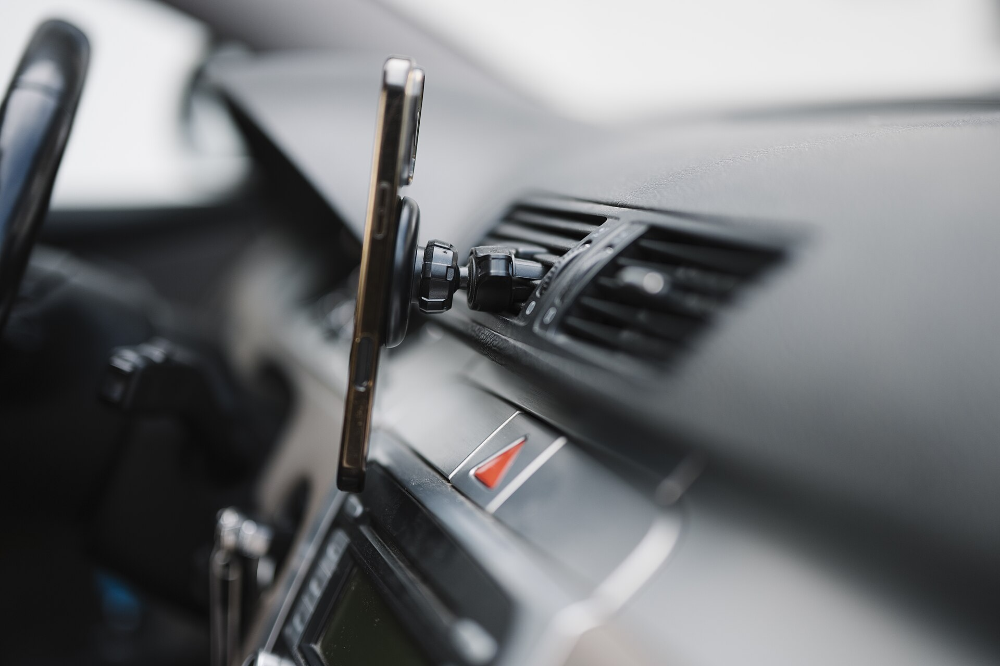
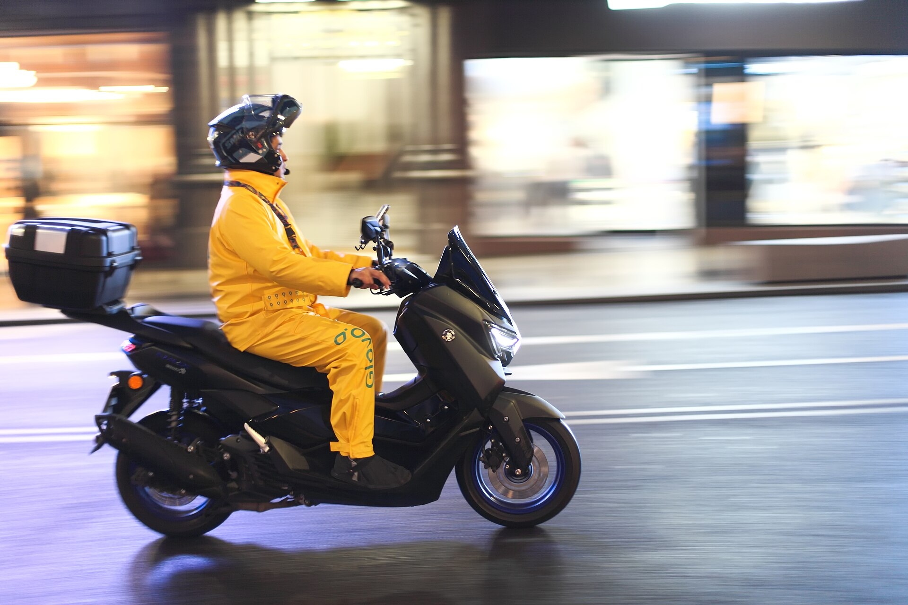
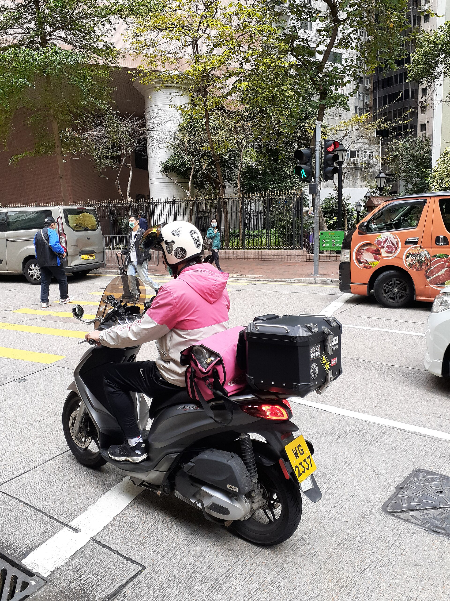
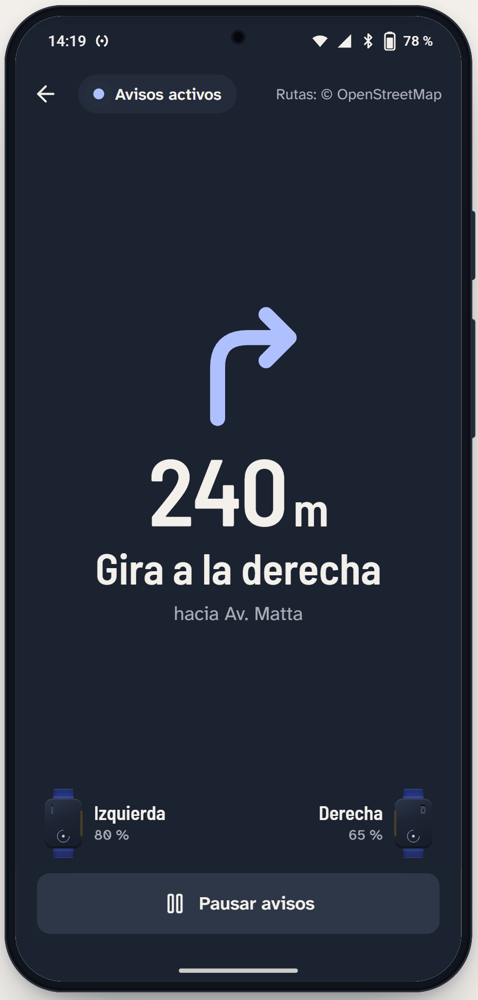
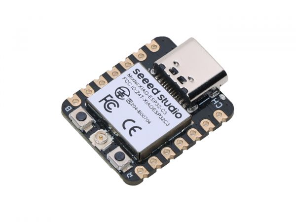
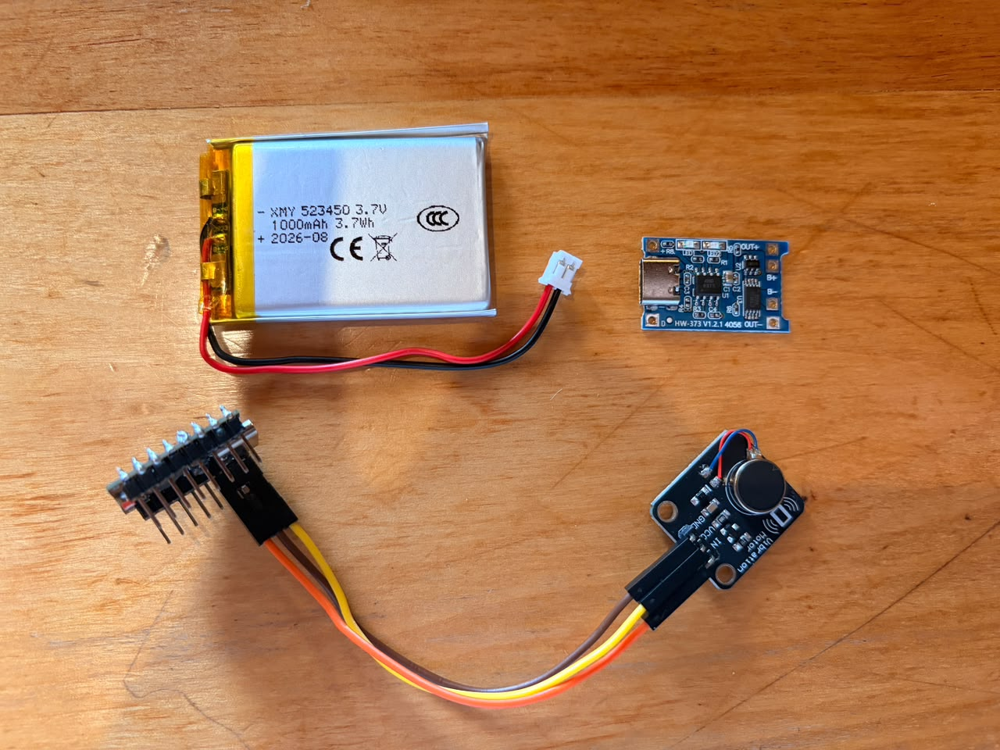
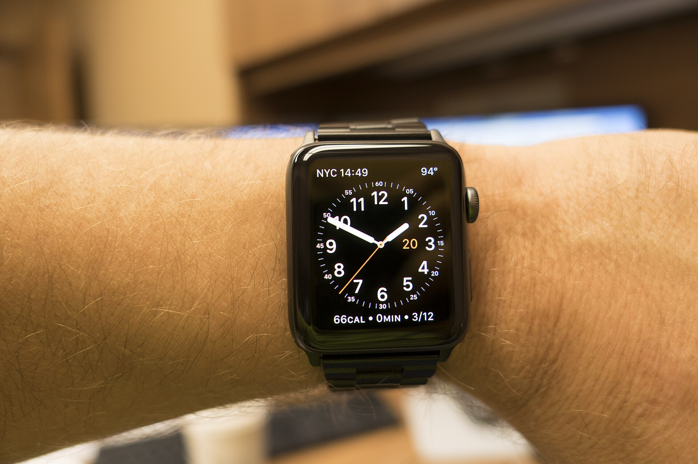
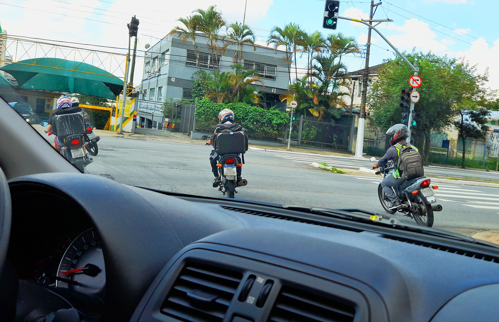
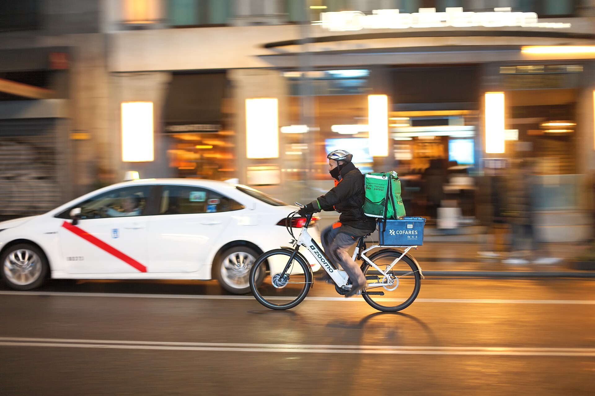

Pontificia Universidad Católica de Chile · Escuela de Ingeniería Noviembre de 2026
ProblemaSoluciónImplementaciónCierre
El problema
Aunque haya voz y soporte, a veces hay que mirar el mapa para confirmar dónde doblar.

¿Doblo aquí o en la siguiente?Foto: Shixart1985, CC BY 2.0

Para un repartidor, es toda la jornadaFoto: Javier Pérez Montes, CC BY-SA 4.0

Sin carrocería que lo protejaFoto: Sanddiea Zhumm, CC BY-SA 4.0
ProblemaSoluciónImplementaciónCierre
¿Por qué debería importarnos?
39%
de los atropellos de 2025 tuvo como causa identificada la distracción del conductor.
CONASET, 2025
Motociclistas en Chile, 2023
241
fallecidos
1.832
lesionados graves
En moto o bicicleta, la carrocería es el propio cuerpo.
Atropellos 2025: estudio de CONASET citado por el equipo. Motociclistas: CONASET, «Motocicletas 2023», con registros de Carabineros (todas las causas). «La carrocería es el cuerpo»: entrevistas del equipo a la SIAT de Carabineros y a la Mutual de Seguridad (E1).
ProblemaSoluciónImplementaciónCierre
Proponemos Vira
Un kit de dos pulseras que indican el próximo giro con una vibración.
Configura la rutaen la aplicación, antes del trayecto
Guarda el celularno necesita mirarlo durante el viaje
Siente el girovibra la pulsera del lado hacia el que debe doblar
Animación 3D del equipo. Demostración conceptual: no muestra el funcionamiento electrónico.
ProblemaSoluciónImplementaciónCierre
Tenemos lo que se necesita

Celularcalcula la ruta y envía el giro
BLEBluetooth Low Energy

ESP32-C3recibe la orden en la pulsera× 2
Módulo de vibraciónhace vibrar la muñeca
Kiss et al. (2018)
Probaron con motociclistas en ruta la navegación por vibración en el cuerpo, con la ruta enviada desde una app por Bluetooth.
Politecnico di Milano
Diseñó una herramienta de navegación para ciclistas con un motor de vibración en cada muñeca.
Imágenes de componentes: referenciales. Kiss, F., Boldt, R., Pfleging, B. y Schneegass, S. (2018). Navigation systems for motorcyclists. CHI 2018, doi:10.1145/3173574.3174191. Politecnico di Milano, Design of a Wearable Haptic Navigation Tool for Cyclists, re.public.polimi.it/handle/11311/1034696.
ProblemaSoluciónImplementaciónCierre
Actualmente
Lo que llevamos
PendienteFoto del prototipo físico: pulsera, ESP32-C3 y módulo de vibración

Pulsera activada desde el celular por BluetoothApp con ruta simulada
Lo nuevo: el lado es la instrucciónSi vibra la muñeca izquierda, se dobla a la izquierda. No hay patrones que aprender.
Lo que nos falta
Integrar el GPSque las pulseras sigan la ubicación real, no una ruta fija
Un protocolo de navegación confiableavisar en el momento y con la precisión correctos
Cuidar los riesgos éticosno generar nuevas distracciones y proteger los datos personales del repartidor
ProblemaSoluciónImplementaciónCierre
¿Por qué invertir en nosotros?
Navegación por voz
Depende del audio
Bajo el casco, el viento y el tránsito tapan la instrucción (78–90 dB)

Reloj inteligente
Más caro: cerca de $375.000
Una sola muñeca: hay que aprender varios patrones de vibración
Vira
No depende del audio
$30.000 por el par de pulseras
Una pulsera por lado: el lado que vibra es el lado del giro
Ruido: Universidad de Southampton (ISVR), 78–90 dB(A) bajo el casco a 48 km/h; Binnington (1994). Reloj: precio de referencia de un Apple Watch en Chile, oct-2026. Fotos: MIKI Yoshihito, CC BY 2.0; Jonathan Cutrer, CC BY 2.0. Render de Vira: equipo.
ProblemaSoluciónImplementaciónCierre
Usamos un método investigado
1vs. 11
errores de giro con vibración en el cuerpo, frente a un navegador visual, en una prueba en ruta con 16 motociclistas.
14 de 16 prefirieron la vibración.
2014HaptiMotochaleco con vibración para motociclistas
2018Kiss et al., CHI 2018cinturón con vibración, probado en ruta
Politecnico di MilanoDos pulseras para ciclistasun motor en cada muñeca
2026Virados pulseras, pensadas para el turno de reparto
Modelo B2BLa empresa compra los kits; sus repartidores los usanFoto: Mutney, CC0
TAM
SAM
SOM
TAM~28 milrepartidores en dos ruedas en Chile
SAM~6 milrepartidores de flotas con reparto propio
SOM400 kitsen el primer año
Primeros clientes: flotas de 50 a 250 repartidorescadenas de restaurantes y empresas de última milla, partiendo con pilotos para medir la utilidad.
TAM: estimación del equipo con boletas del SII (Ministerio del Trabajo, Segunda evaluación de la Ley 21.431, 2025, y Tercera evaluación, 2026), uso de varias apps y tipo de vehículo; incluye flotas. SAM y SOM: estimaciones propias (modelo de negocio E4).
ProblemaSoluciónImplementaciónCierre
El proyecto en marcha
Venta del kit
$30.000
por el par de pulseras, precio neto
Una flota de 100 repartidores: $3 millones
Plan mensual
$1.000
por kit activo: actualizaciones de navegación y soporte técnico
Ingreso recurrente
Costo de producción por kit
$16.000
al inicio, y baja a medida que fabricamos más
Lotes de 500$16.000
Lotes de 2.000$14.800
Lotes de 5.000$13.500
Precio$30.000
Modelo de negocio del equipo (E4), escenario base, pesos chilenos sin IVA. El costo baja por compras en mayor volumen.
ProblemaSoluciónImplementaciónCierre
Inicialmente
Kits vendidos por año, escenario base
Financiamiento necesario
$48 M
cerca de 48 millones de pesos
Resultado operativo positivo
Año 4
y la inversión se recupera en unos 4,1 años
Modelo de negocio del equipo (E4), escenario base: flotas en Chile en los años 1 y 2, una plataforma en Chile desde el año 3 y otros países desde el año 4. Con ventas 30 % menores, la inversión no se recupera al quinto año.
ProblemaSoluciónImplementaciónCierre
Vira en la cadena de valor
Ventaja competitiva
El hardware se puede copiar. Las alianzas con flotas y la evidencia propia sobre el desempeño del producto, no.
ProblemaSoluciónImplementaciónCierre
Vira como proyecto latinoamericano
La seguridad de los repartidores en Latinoamérica es nuestro objetivo
The Economist8 de octubre de 2026
Latin America has caught motorcycle fever
Las ventas anuales de motos en la región pasaron de unos 3 millones (2019) a casi 6 millones (2025).

351 milmotociclistas trabajaban en plataformas digitales en Brasil en 2024+66 % desde 2022
The Economist, «Latin America has caught motorcycle fever», 8-oct-2026. Brasil: IBGE, PNAD Contínua, módulo «Trabalho por meio de plataformas digitais» 2024 (publicado el 17-oct-2025); en 2022 eran unos 211 mil. Foto: Isabela Novelli, CC BY-SA 4.0.

ProblemaSoluciónImplementaciónCierre
Nuestra visión
Llegar seguros a su casa al final del día también debe ser una prioridad.
Que se concentren en lo más importante: el camino.